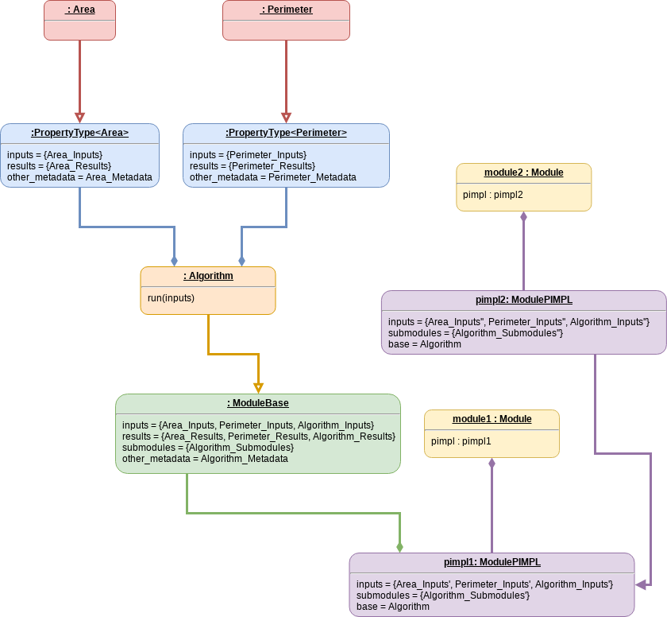

Understanding a Module’s State¶
Arguably one of the largest tasks of the SDE is to manage each module’s state. This page describes
Property Type State¶
Let’s say that a developer has defined the property type Area for modules
that compute the area of shapes. The state of the Area property type is then
described by the following UML state diagram:

All property types have three main types of state:
inputs: the inputs that the property depends on
results: the property
metadata: stuff describing the property type class itself
For our Area property type rather, than explicitly list the actual values
for the inputs, results, and metadata we have symbolically denoted them with the
quantities Area_Inputs, Area_Results, and Area_Metadata
respectively. These values are the same for every instance of the Area
class.
Developer-Set Module State¶
Each module contains an algorithm, which depending on the complexity, may
compute one or more properties. For sake of argument let’s say that a module
developer has an algorithm that computes both the area and perimeter of a shape
simultaneously. We’ll call the module encapsulating this algorithm “Algorithm”,
and encode it in Algorithm class. The following UML state diagram captures
the state:

Like each property type the Algorithm class has a set of inputs, a set of
results, and some metadata. Algorithm’s inputs/results are the union of the
inputs/results of each property type it satisfies (here Area and
Perimeter) as well as any additional inputs and results that the
Algorithm class takes/returns (since they are not usable from any of the
property type APIs these additional inputs/results are assumed to be trivial
parameters like printing thresholds). Unlike the inputs/results, the metadata
for the Algorithm class is unique to it and not the union of the
property types it satisfies.
The Algorithm class also picks up two new pieces of state relative to a
property type: a list of callback points (stored in the submodules member
and set to the collective value Algorithm_Submodules in the above figure)
and the actual callable piece of code (denoted symbolically by the run
member of the Algorithm class). This state will be the same for all
instances of the Algorithm class and comprises what we term the developer’s
default module state.
User-Set Module State¶
The final state of any module has one more layer. This is the layer that holds any changes to the module’s state during a run. The following UML state diagram describes this state:

When a module is added to the ModuleManager it is added by a pointer to
the module base. The ModuleManager then constructs a ModulePIMPL
instance, we’ll call that instance pimpl1 and puts it inside a Module
instance, we’ll call that instance module1. When the ModuleManager does
this it deep copies the inputs and submodules into the newly created
module1 instance. It also stores a pointer to the original ModuleBase
instance from which it will read metadata and the results (it doesn’t make sense
for the results to change as doing so implies the algorithm changed).
The primes on the state of the pimpl1 instance are meant to indicate that
the state originates from that of ModuleBase, but may have been changed
by the user. This is because it is this set of state that can be manipulated by
the user. It is this user state that is interacted with. For example when you
call a module it is the values stored in pimpl1 that are used, not the
values in a given Algorithm instance.
Copied Module State¶
For clarity it is worth describing one other type of module state and that is state arising from copying a module. This is described in the following UML state diagram:
For a variety of reasons a user may need a copy of a module (for example to
change the bound parameters on a locked module, or to run the same module in a
thread environment with different state). They do this through the
ModuleManager. In the above diagram the resulting module is the instance
module2, which contains a ModulePIMPL instance named pimpl2. The
state of pimpl2 is denoted with two primes to symbolize that it originated
from pimpl1’s state, but may have been changed by the user since the deep
copy occurred. Of note both module11 and module2 contain the same
instance of Algorithm (because the state of Algorithm is the same for
all instances, there’s no reason for them not to).